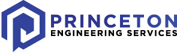
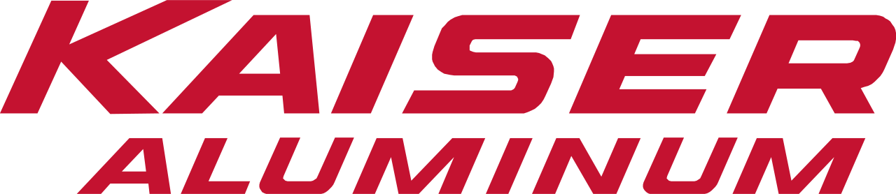
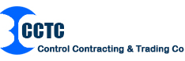

Work Experience
My professional experience ranges from a working at a big Financial Technology company with many clients to designing buildings in a fast-paced environment in line with my field of study. I am an engineering leader who is excited to apply my strong work ethic and team building knowledge to make a genuine impact. I hope to take on many opportunities for personal and professional growth.
Some examples of my work experience are listed below:

Princeton Engineering Services
Project Engineer
Jan 2018 – Present
I currently work as a Project Engineer at Princeton Engineering Services, where I manage over 20 projects for many agencies in the public sector. I spent the majority of my time designing educational facilities and serve as the go-to K-12 engineering resource for our NYC School Construction Authority (NYCSCA) projects. I manage projects through all aspects of the lifecycle, from conceptual design through project completion. In addition to designing Mechanical (HVAC) systems, I also design Plumbing (domestic water, sanitary drainage, gas distribution), Electrical (power distribution, lighting, telecommunication), Fire Alarm (smoke/CO detection, alarms) and Fire Protection (sprinkler) systems and coordinate work between all trades. I understand complex project needs, provide reliable options and deliver cost-effective & energy efficient design solutions in a timely manner. I ensure deliverables are completed on time, within budget, and according to the project's scope of work. Some of my other clients inlcude School District of Philadelphia (SDP) and NJ Division of Property Management and Construction (DPMC). I strongly believe that even in our outdated construction industry, quality engineering and sustainable design can and should always be achieved.
I manage all my projects by following the engineering design process, where I start by finding and responding to proposals, preparing fee estimates and creating technical writeups. Once the project is awarded to our firm, I perform field surveys and prepare engineering Scope Reports with Findings and Recommendations, Electrical Load Calculations, Scope Drawings, Equipment Cuts and Construction Cost Estimates. When the funding is secured and the client has given authorization to proceed, I work on Design Drawings in AutoCAD, type up the Specifications, perform Quality Control and respond to any concerns by the client. I regularly perform heating and cooling load calculations to determine design criteria and size system components. I am well-versed with my clients' design requirements, room planning standards, standard details, specifications, processes, submissions and filing procedures (DOB, BCC and FDNY). I am also familiar with relevant local, state, and national codes (building codes and energy compliance codes) and regulations. When the drawings have gone through the review process and are approved, I prepare bid documents and answer any RFIs and submittals from the contractors. I issue addendums and bulletins as necessary and prepare punchlists. Lastly, I also invoice for the work that has been completed and am responsible for relationship management with my clients.
Associate Systems Analyst
Jul 2016 – Nov 2017
My responsibilities included managing CRD's global operations and providing tier 2 back-end support for our SaaS clients. I initiated and executed numerous process improvement strategies to increase efficiency and effectiveness. I designed new reliable systems solutions and refined existing operational procedures. I deployed and maintained automation workflows on job schedulers such as Rundeck and Tidal. I participated in daily DevOps Scrum meetings and tracked cases using Salesforce's CRM platform. I coordinated with clients and vendors to troubleshoot issues detected by CRD's automation tools. I resolved complex automation alerts and managed system administration and user management for CRD systems.
I quickly took on additional responsibilities as I became a senior analyst within the team and organization. I prioritized improving documentation for the team by creating new and updating existing team guidelines and procedures. I provided logical and technical action plans to improve processes for tasks I had a strong technical grasp on, such as automation job changes and migrations. I collaborated with various teams within the organization, such as the Network Infrastructure team, on database restores, scrubbing, encryption, and decryption. I configured process and software changes to ensure business continuity and system availability. I researched and implemented new technologies to increase scalability and usability. I frequently provided feedback on different process improvements to improve security and efficiency.

Kaiser Aluminum
Intern Project Engineer
May 2015 – Aug 2015
As an engineering student, it was important that I got real world experience in addition to all my coursework. I pursued my professional curiosities, around how things work, through internships in various engineering industries: Construction, Oil & Gas and Manufacturing.
My most recent and memorable internship was during the summer of 2015, where I worked at Kaiser Aluminum in Kalamazoo, MI as an Intern Project Engineer. I was working with the Plant Operations team to solve problems around the plant. My responsibilities included managing 5 capital projects and applying my knowledge of the engineering design process to successfully complete them from start to finish. I designed and tested solutions which maximized ergonomics and reduced downtime. Check out my resume for more details on this internship and the other summer internship experiences I've had!

Intern Mechanical Engineer
Jun 2014 – Jul 2014
• Prepared reports by collecting, analyzing & summarizing data using Microsoft Excel.
• Assembled, repaired and redressed hydraulic release liner hanger systems using service units.
• Generated technical data sheet for various tools and performed pressure quality & function tests.

Undergraduate Teaching Assistant
Jan 2014 – May 2014
• Mentored 7 teams in the ‘Transforming Ideas to Innovation II’ class.
• Tutored students in MATLAB and Microsoft Excel and demonstrated assignments.
• Coached teams on engineering design projects and promoted analytical thinking.

Control Contracting & Trading Co.
Intern Mechanical Engineer
May 2013 – Jun 2013
• Drafted workflow templates for projects and operated HVAC duct fabrication machines.
• Inspected and documented quality of containerized accommodation modules for offshore use.
• Fulfilled environmental health and safety trainings, risk inspections and progress checks.